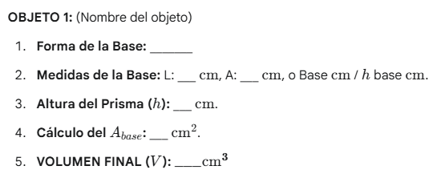

Instrucciones de la Tarea
Ahora te presentamos tu tarea , ¡no te rindas!
Materiales Necesarios: Regla o cinta métrica, Dos objetos con forma de prisma, Cuaderno y lápiz.
Practica con esta ficha para consolidar tu aprendizaje con uno a varios objetos.
